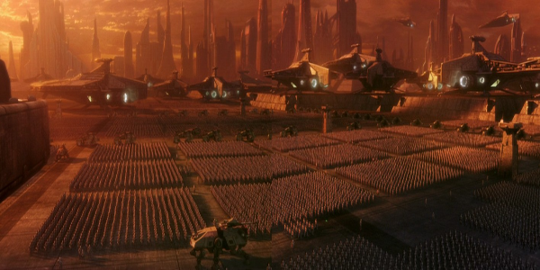

Ten years after the invasion of Naboo, the Galactic Republic is facing a Separatist movement and the former queen and now Senator Padmé Amidala travels to Coruscant to vote on a project to create an army to help the Jedi to protect the Republic. Upon arrival, she escapes from an attempt to kill her. After an assassination attempt on the life of Senator Padmé Amidala, Jedi Knight Obi-Wan Kenobi and his Padawan learner Anakin Skywalker are sent to investigate. After tracking down the assassin, she is killed before any information can be driven out of her.
The two Jedi are then sent on two different missions: Anakin is sent to Naboo with Padmé and Obi-Wan is sent to the planet of Kamino where he will investigate the assassination attempts. Little does he know, he is investigating some of the biggest events of the Star Wars saga, as he finds out that there is a connection between the assassination attempts and a separatist movement led by a former Jedi against the Republic. The Galactic Republic finds itself at the brink of a clone wars.
